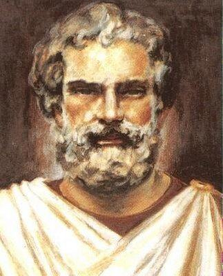

Tales de Mileto

Referência:estudopratico.com.br Acesso-30/09/20
Ensinamentos
- Se alguém perguntasse a Tales se antes vinha a noite ou o dia ele respondia que antes de tudo vinha a noite, depois de um dia;
- Falava que a coisa mais simples é dar conselhos a outras pessoas;
- A coisa mais agradável é ter sucesso e que a mais desagradável é um tirano poder envelhecer;
- O divino é o que não tem nem início nem fim;
- Deus vê os injustos mesmo quando eles ainda estão pensando em fazer a injustiça;
- O ser mais antigo é Deus, porque não foi gerado;
- Todas as coisas estão cheias de deuses;
- O falso juramento não é pior que o adultério;
- Se suporta mais facilmente a má sorte se percebermos que o inimigo está pior que nós;
- A esperança é o único bem comum a todos os homens; aqueles que nada mais têm ainda a possuem;
- Se vive virtuosamente não fazendo ao outro o que não queremos para nós;
- A coisa mais difícil do mundo é conhecer a nós mesmos e a mais fácil, falar mal dos outros.
- Tales falava que a morte não é diferente da vida, e se alguém lhe perguntava porque então ele não morria ele dizia que era porque não tinha diferença entre vida e morte.
- É feliz quem é saudável do corpo, rico de alma e bem educado;
- Conhece-te a ti mesmo.